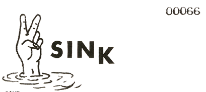
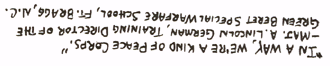

|

A GAME
by Ala Hera, E.L., N.S.; RAYVILLE APPLE PANTHERS
SINK is played by and people of much ilk.
PURPOSE: To sink object or an object or a thing...
in water or mud or anything you; can sink something in.
RULES: Sinking is allowd in any manner. To date, ten pound chunks of mud
were used to sink a tobacco can. It is preferable to have a pit of water or
a hole to drop things in. But rivers - bays - gulfs - I dare say even
oceans can be used.
TURNS are taken thusly: who somever gets the junk up and in the air first.
DUTY: It shall be the duty of all persons playing "SINK" to help find more
objects to sink, once; one object is sunk.
UPON SINKING: The sinked shall yell "I sank it!" or something equally as
thoughtful.
NAMING OF OBJECTS is some times desirable. The object is named by the
finder of such object and whoever sinks it can say for instance, "I sunk
Columbus, Ohio!"

|